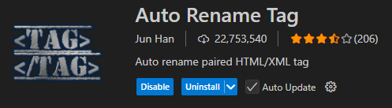
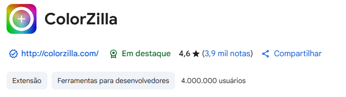
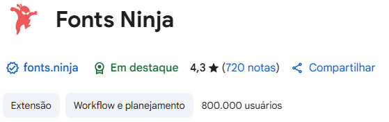
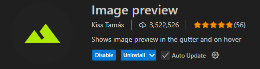
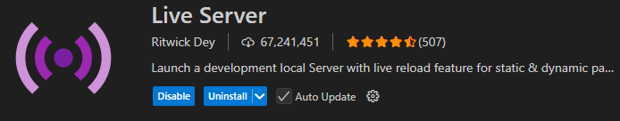
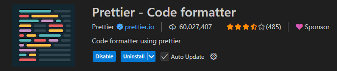
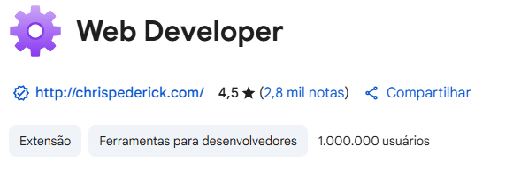

Bem vindo a Coleção de ferramentas Front-End
Aqui você poderá encontrar diversas ferramentas que irão auxiliar você na construção de qualquer projeto que você deseje realizar, desde a criação de logotipos até auxílio no desenvolvimento HTML.
Coolors
Neste site você pode gerar e explorar paletas para todo e qualquer uso, criar paletas a partir de imagens, checar o contraste de cores e achar fontes.
Tipo: Site
ver mais
Favicon
Neste site você pode transformar qualquer tipo de imagem em um favicon com a extensão .ico para usar como quiser em seu site. Você também pode gerar favicons a partir de texto e até mesmo emojis.
Tipo: Site
ver mais
Emojipedia
Neste site você pode encontrar diversos emojis para colocar em seus projetos juntamente com o seu código para ser implemetado em documentos HTML por exemplo. Fora isso, você também pode encontrar stickers e criar seus próprios emojis com a ferramenta de mistura.
Tipo: Site
ver mais
Auto Rename Tag
Esta extensão faz com que, qualquer alteração que você faça para a tag de início ou de fechamento, seja aplicada para ambas.
Tipo: Extensão Vscode
ver mais
Colorzilla
Nesta extensão do seu navegador, você pode escolher cores de qualquer site que você acesse de maneira fácil e rápida. Com ela você também pode extrair a maioria das cores da página com apenas um clique e gerar gradientes para css.
Tipo: Extensão Navegador
ver mais
Fonts Ninja
Com esta extensão você pode identificar as fontes usadas em qualquer site juntamente com informações como o tamanho, espaçamento, cor, de maneira fácil e rápida. A extensão permite também você salvar fontes para usar mais tarde e comprar fontes pelo site oficial da extensão.
Tipo: Extensão Navegador
ver mais
Image Preview
Com esta você pode identificar com facilidade que imagem que você colocou em seu documento HTML, sem precisar abri-la em outro lugar, por meio de mini preview da imagem que fica à esquerda da linha onde a imagem foi colocada.
Tipo: Extensão Vscode
ver mais
Live Server
Com esta extensão, você não precisara mais recarregar a página do navegador em que esta testando seu projeto HTML toda vez que fizer qualquer mudança, uma vez que esta extensão o atualiza automaticamente.
Tipo: Extensão Vscode
ver mais
Prettier
Esta extensão permite que você foque em seu código enquanto ela cuida da sua formatação, ajustando-a automaticamente quando o documento é salvo.
Tipo: Extensão Vscode
ver mais
Web Developer
Com esta extensão do seu navegador você pode analisar completamente um website, desativando seu estilo, javascript, imagens, contornar divs, tabelas, elementos e muitas outras funções.
Tipo: Extensão Navegador
ver mais
Sticker Mule
Neste site você pode, criar designs, remover o fundo de imagens, aumentar o tamanho de imagens sem perder sua qualidade, converter imagens para arquivos vetoriais, transformar imagens em produtos impressos e criar etiquetas de frete para seu negócio.
Tipo: Site